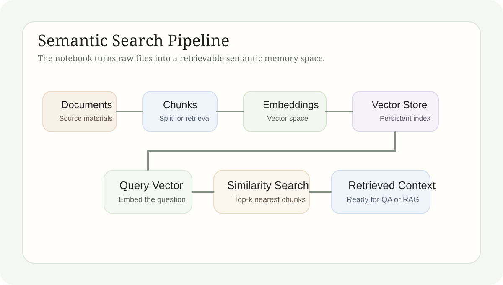

语义搜索学习笔记
本文把文档加载、切块、向量化、向量存储与检索问答重新组织成一条完整链路，并说明 notebook 中每一步到底在解决什么问题。
Technical Explainer
语义搜索的核心不是 embedding 模型本身，而是“文档怎样被整理成可检索语义记忆”。这组笔记围绕这一点展开，从原始资料进入系统开始，一直走到最小 RAG 问答。
1. 学习主题
语义搜索要解决的问题，不是“如何找完全相同的词”，而是“如何找语义上相关的内容”。因此，学习对象天然是一条流水线：文档如何被导入、怎样被切成合适片段、如何被映射到向量空间、又如何在提问时被重新取回。
只看 embedding 模型远远不够。只要文档质量、切块策略或 metadata 组织方式出现偏差，最后的检索质量就会显著下降。语义搜索因此更像一个系统设计问题，而不是单点模型问题。

2. 核心原理
语义搜索的基本逻辑可以分成四个对象。第一是文档对象，它决定系统最初拿到什么信息。第二是 chunk 对象，它决定召回单位到底多大。第三是 embedding 空间，它把文本从字符串映射成可比较的向量。第四是检索器，它在查询到来时负责把最相关的片段取回。
这四个对象彼此耦合。chunk 太大，召回会混入噪声；chunk 太小，语义会被切碎。metadata 不干净，后续过滤与引用会变得困难。retriever 参数设置不合理，向量表示再好也未必能返回真正有用的上下文。
文档组织
loader 和原始资料质量决定了系统最开始能否拿到结构清晰的文本对象。
检索单位
切块策略决定召回粒度，也决定后续回答能否既准确又保留上下文。
召回控制
embedding、vector store 和 retriever 参数共同决定 top-k 结果是否真正可用。
3. 练习实现
当前 notebook 先用 LangChain loader 读取文档，再用 text splitter 把长文本切成可索引的片段，之后生成 embedding 并写入向量存储。系统完成这些准备后，会通过 similarity search 和 retriever 接口把相关上下文取回，最后再接到一个最小 RAG 问答流程上。
这一实现路径的价值在于，它把“检索”从抽象名词变成了明确的代码对象。每一步都可以被拆开检查：文档有没有读干净，chunk 有没有切得过碎，metadata 是否保留，向量库是否真的写入成功，召回的 top-k 结果是否与问题匹配。
导入与切块
文档是否能被干净切成语义片段，直接决定后续召回上限。
向量化与存储
embedding 和 vector store 把文本从静态文件转成了可以被检索系统调用的记忆单元。
检索到回答
最小 RAG 实验的意义，是验证召回结果能否真正为后续问答提供有效上下文。
4. 当前产出
这组学习已经形成一个完整的最小系统：原始文档能够被导入、切块、向量化、写入向量数据库，并在查询时通过 similarity search 被取回。对一个入门阶段的 RAG 学习来说，这条链路已经足够说明核心机制。
更关键的收获是，对检索质量的判断不再停留在“感觉好不好”。chunk 大小、metadata、检索参数和召回结果都已经成为可观察、可比较、可继续优化的对象。
5. 结论
语义搜索真正改变的，是知识被调用的方式。文档不再只是静态文件，而是可以被切分、索引、召回并重新组合的上下文资源。RAG 的很多效果，最终都建立在这条检索链路是否可靠之上。
6. 完整代码笔记
看 notebook 时建议先抓住三个节点
先看 chunk
召回质量往往先坏在切块阶段，而不是坏在最后的问答阶段。
再看向量库
如果索引没有真正写入或 metadata 丢失，retriever 表面可用也很难稳定。
最后看 RAG 接口
最小问答链路的价值，是验证召回结果是否真的能支撑回答。
代码范围：完整渲染 `Semantic_Search_langchain/SS.ipynb`，便于把检索链路和最小 RAG 放在一页里查看。